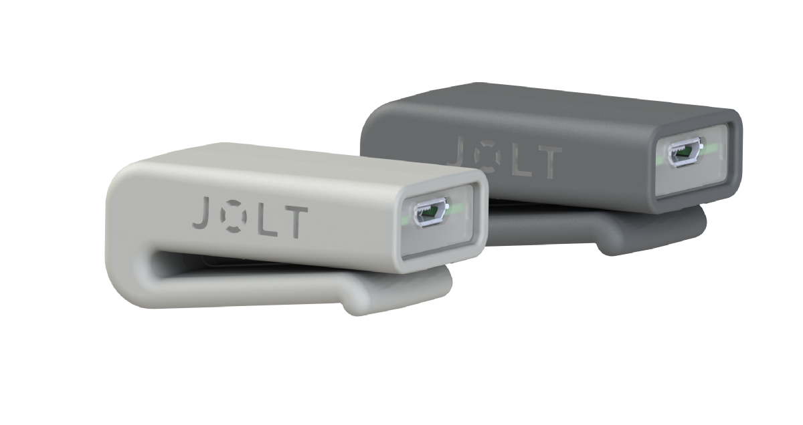

A Head Impact Sensor Designed For Every Sport
Mount the sensor to whatever you wear on your head. Its versatile patent-pending design means one sensor for all of your activities. Whether you wear a sweatband, helmet, hairband, baseball cap, or wrestling headgear, the sensor can quickly and easily detach and re-mount for seamless transitions between sports.

Live Data and Alerts in the Palm of Your Hand
When the sensor registers an impact, it shares it with the connected mobile app in real-time. When a significant impact is detected, the sensor vibrates to alert the player, while the mobile app alerts those following from the sidelines that the athlete should be removed from play for a brief evaluation.

Guided Recovery
Symptoms identified in the evaluation, the results of the team's standard evaluation protocol, and the return to play decision can all be entered directly into the app, alongside the collected impact data. All of this data is securely stored in the cloud, allowing you access to a lifetime of data for your athlete. And the app will automatically follow up with you after a few days to see if a doctor has been visited, if a concussion has been diagnosed, and if symptoms are persisting. As long as symptoms persist, the app will check in with you daily to see how they are progressing.